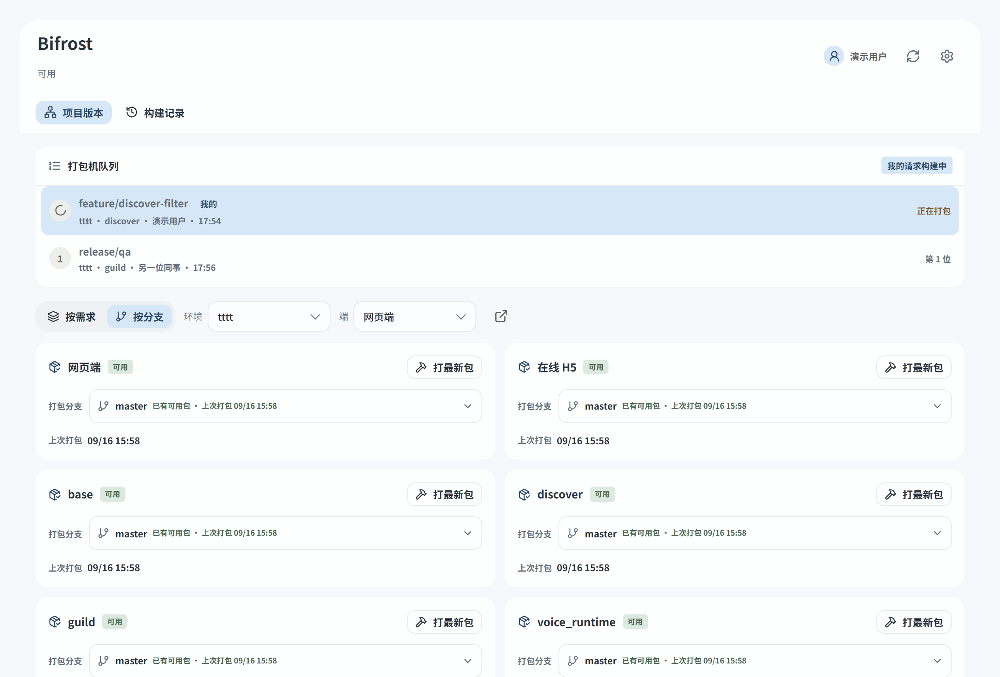
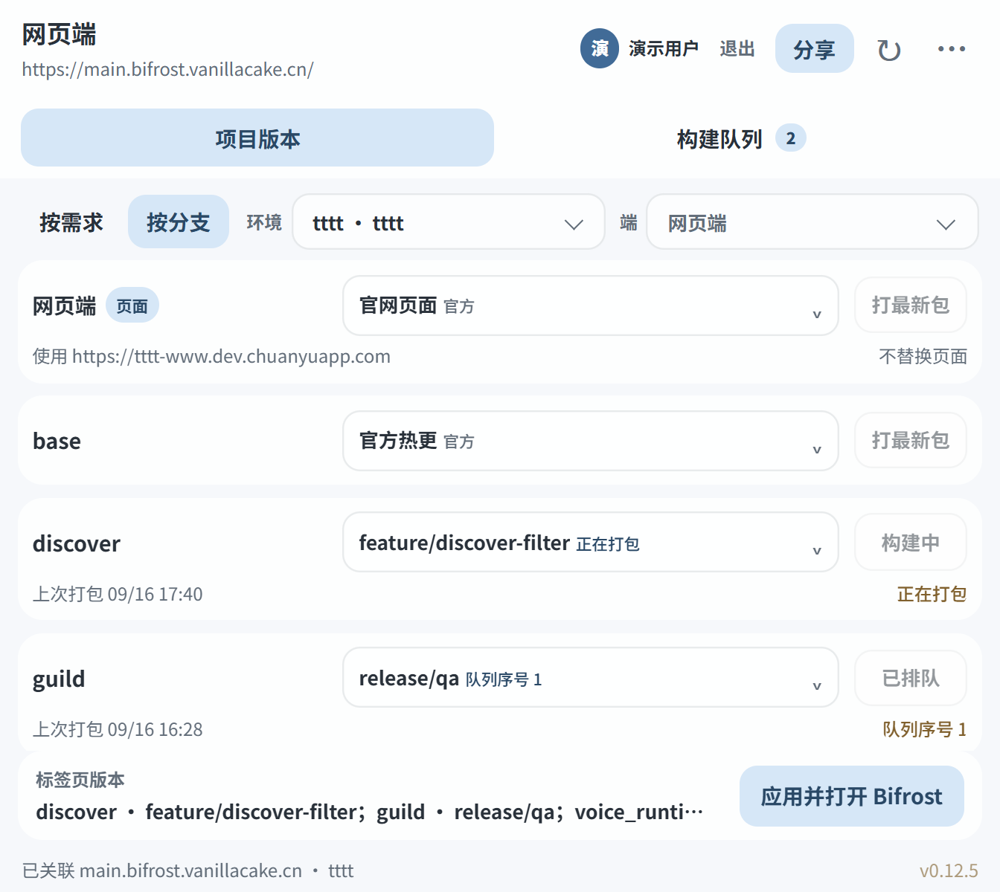
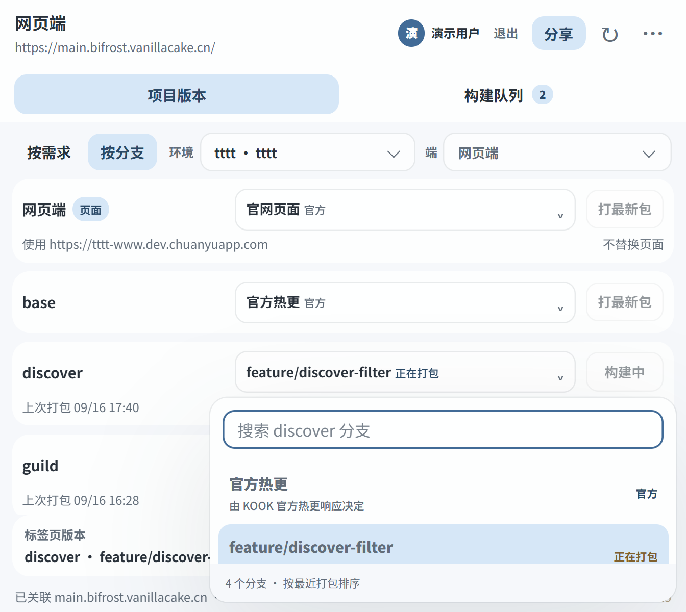
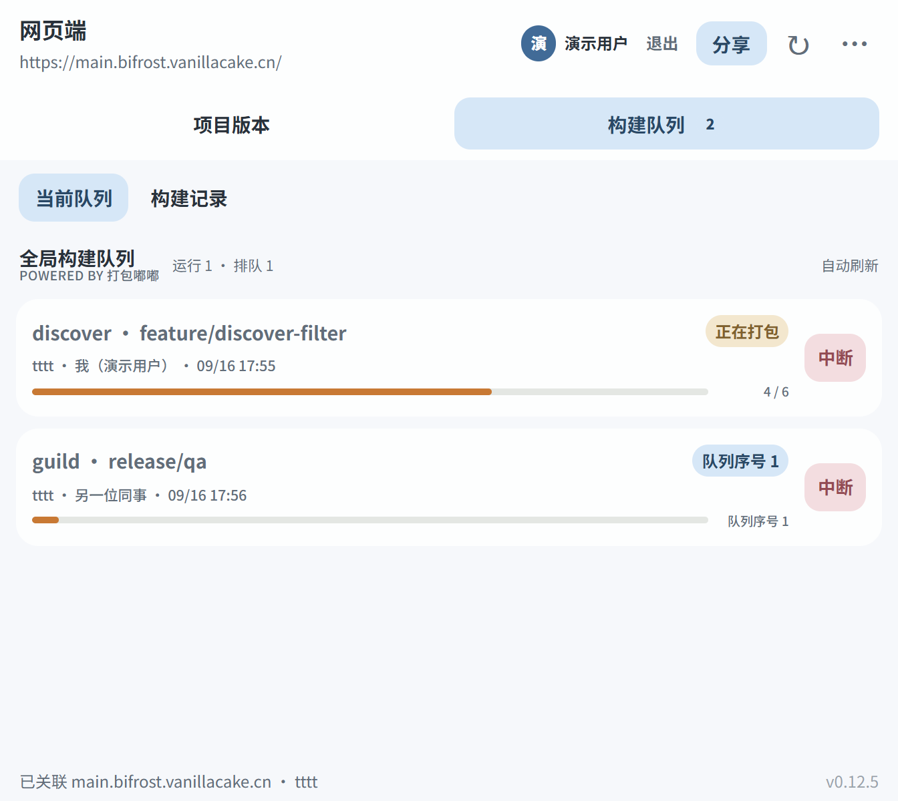
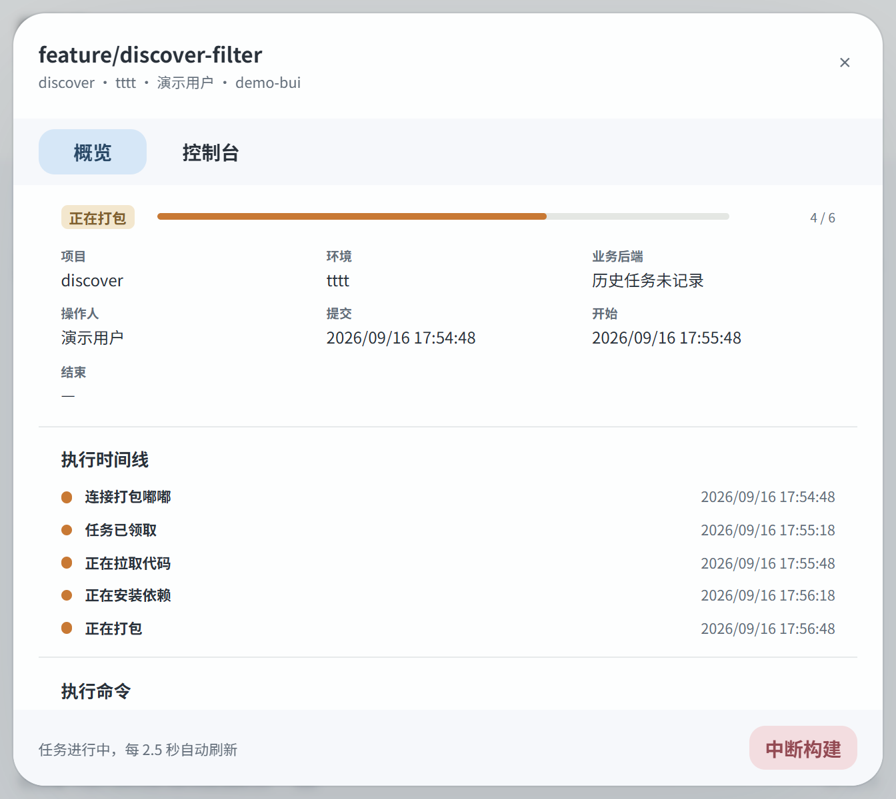

面向 QA 与研发 · 图文指南
使用教程
面向 QA 与研发的版本选择和提测指南
Bifrost 让你按项目选择要测试的分支，将页面与热更模块组合成自己的测试版本。你可以直接发起构建，也可以把一组环境和分支保存为具名需求，让同事通过链接预览。
打包只准备产物，不会自动应用到页面，也不会发布到 KOOK 官网。 构建成功后，还需要点击“应用”，或重新打开对应需求的预览链接。
- 1选环境
- 2选分支
- 3打包并等待
- 4应用并验证
- 5分享需求
第一次使用的最短路径
- 安装 Bifrost 浏览器扩展，使用飞书登录。
- 打开目标 KOOK 页面，再打开扩展的“项目版本 → 按分支”。
- 核对环境，为需要修改的页面或热更模块选择分支。
- 没有可用包时点击“打最新包”，在“构建队列”中等待成功。
- 点击“应用”，检查页面实际环境与版本，再开始测试。
只收到提测链接？ 如果对方给的是独立预览域名，直接在浏览器打开即可，不必先安装扩展。KOOK 业务自身需要登录时，仍需登录对应环境的 KOOK 账号。

- 01顶部先确认环境，页面与热更项目按行列出。
- 02队列展示全局任务与发起人；项目行负责选择分支和发起构建。
真实界面 · 演示数据，不代表当前部署配置。
安装扩展与登录
先完成 Bifrost 身份验证，再进入要测试的业务页面。Bifrost 登录和 KOOK 业务登录是两套独立的会话。
从 KFC 安装
- 在 KOOK 测试工具平台 KFC 中找到“Bifrost 浏览器插件”，安装或更新。
- 打开 Chrome 的
chrome://extensions，或 Edge 的edge://extensions。 - 开启“开发者模式”，点击“加载已解压的扩展程序”，选择 KFC 展示的扩展目录。选择的目录中应直接包含
manifest.json。 - 将 Bifrost 固定到浏览器工具栏，方便从业务页面打开。
从源码使用时，固定加载项目中的 apps/browser-extension 目录。不要把每次生成的版本 ZIP 当作日常加载目录。
更新后要重新加载。 KFC 更新或手动覆盖文件后，在扩展管理页对 Bifrost 点击“重新加载”，然后刷新业务标签页。只关闭、再打开弹窗，不一定会更新后台脚本。
使用飞书账号登录
- 打开控制台 bifrost.vanillacake.cn，或在扩展中点击“使用飞书登录”。
- 完成飞书授权，页面会尝试自动关闭。若仍保留，看到“飞书登录已完成”后，可手动关闭并返回。
- 重新打开扩展，确认顶部出现自己的姓名。构建记录中的发起人由飞书身份提供，无需填写操作人名称。
控制台地址通常不用改。 扩展右上角“⋯ → 连接设置”中的默认地址是 https://bifrost.vanillacake.cn。只有使用另一套部署时才需要修改。
认识三个入口
| 入口 | 日常用途 |
|---|---|
| Bifrost 主站 | 查看项目分支、构建记录、全部提测需求；维护配置 |
| 浏览器扩展 | 为当前业务标签页选择环境和版本，应用或停用预览 |
| 独立需求预览链接 | 无需扩展，直接打开某个需求对应的页面与热更组合 |
首次配置完扩展后，请切回业务标签页。停留在无站点绑定的普通网页时，扩展可能不会列出项目。
选择分支并应用
进入扩展的“项目版本 → 按分支”。每一行是一个可独立选择的项目：页面项目决定本体代码，热更项目决定对应模块，例如 base 或 discover。

- 01先看环境：它决定后端和可用产物。
- 02项目独立选择：保留官方来源，或选择已构建分支。
- 03最后应用：下拉框是草稿，底部按钮才让选择生效。
真实界面 · 演示数据，不代表当前部署配置。

- 01在搜索框输入分支关键词，列表仍保留构建状态。
- 02正在打包、上次失败、已有可用包，都可以在选择时看清。
真实界面 · 演示数据，不代表当前部署配置。
按这个顺序操作
- 核对顶部站点和环境。 特别留意环境是否被当前 URL 锁定。
- 展开项目的分支下拉框。 输入关键词搜索分支；列表按最近构建活动排序，并显示构建进度与可用情况。
- 为每个需要替换的项目选择分支。 其余项目保留“官网页面”或“官方热更”。这表示不覆盖对应部分，并非切到 master。
- 缺包时点击“打最新包”。 选中的分支会实时保存。即使等待时关闭扩展，下次打开仍保留草稿选择。
- 确认有可用包后点击“应用”。 页面会刷新，或按当前模式打开 Bifrost 预览站。检查“此标签页正在预览”等状态，再继续测试。
读懂分支状态
| 看到的状态 | 应如何理解 |
|---|---|
| 官方 | 不用 Bifrost 产物覆盖这一项，保留原来源 |
| 上次打包 | 展示已有构建的时间，判断是否需要再打最新代码 |
| 上次打包失败 | 最近任务失败；若仍有“已有可用包”，旧成功包可能仍能使用 |
| 排队中或构建中 | 任务尚未完成，可点击进度查看任务详情 |
| 已有可用包 | 已存在可选择的成功产物，不代表分支最新提交已经打包 |
选择不等于应用。 切换下拉框只是修改草稿；正在服务的标签页仍使用上一次应用的版本。切换环境后也需要重新应用。
按钮变灰与恢复版本
任一所选分支没有可用成功产物时，“应用”会禁用。将鼠标停在按钮区域可查看原因。全部选择官方是有效配置，不应该仅因没有自定义包而禁用。
成功提交构建后，“打最新包”会暂时禁用以避免重复任务；手动刷新或切换分支后可重新操作。已经在运行的任务请先到队列确认。
点击当前预览区域的“停用”可移除扩展对该标签页的覆盖。在普通 Bifrost 站点上，停用后会回到站点默认配置；这不等于切回某个固定测试环境。独立需求域名本身的配置仍由需求决定。
选择环境与页面来源
环境同时决定业务后端、可选构建产物和该项目使用的构建命令。同一分支在线上、tttt、QA 中的包分别保存，不能把一个环境的包直接当作另一个环境的包使用。
当前网址决定可用方式
| 当前页面 | 页面本体 | 热更模块与环境 |
|---|---|---|
| KOOK 官网域名 | 保留官方本体 | 可替换热更；按域名与 URL 规则确定环境 |
| 开发测试域名 | 保留测试站本体 | 可替换热更；更具体的 URL 规则可指定 QA 等环境 |
| 普通 Bifrost 预览站 | 可选页面分支产物，或回退官方页面 | 可组合热更，并在可用环境间切换 |
| 独立需求预览域名 | 使用需求中保存的本体选择 | 使用需求环境与模块选择，无需扩展 |
| localhost | 保留本地 devserver 本体 | 每个热更模块可单独选择本地、tttt 或分支产物 |
域名默认归类为：*.kookapp.cn 属于线上，*.dev.chuanyuapp.com 属于测试，localhost 属于测试。环境的最终锁定结果以扩展顶部提示为准；管理员配置的具体 URL 规则可以进一步区分测试环境。
需求同时指定了本体和热更
在官网或本地页面使用带本体分支的需求时，扩展会询问是否切换本体版本：
- 仅切热更：留在当前 URL，只使用需求的热更选择，不更换本体。
- 切热更和本体：前往 Bifrost 预览站，完整使用该需求。
- 取消：不应用此次需求。
“仅切热更”不会把当前官网的真实后端跨环境替换掉。如果需求环境与当前 URL 锁定环境不兼容，请使用完整预览，或先切到匹配环境的页面。
localhost 的独立模块选择
“走本地devserver”表示不接管这个模块；“走tttt”表示使用 tttt 当前下发的该模块版本；普通分支表示使用 Bifrost 已构建的产物。它们可以按模块混用，不会把整个本地网页跳到 tttt。
网络前提不同。 localhost 的“走tttt”需要你的浏览器能访问 tttt，并具备有效的业务授权与版本上下文。服务器的 Mihomo 正常，不代表本地浏览器一定能访问公司内网。
跟踪构建与处理失败
Bifrost 的构建由打包嘟嘟执行。所有用户共享构建队列，可以看到当前在忙什么、发起人是谁，以及自己的任务排到哪里。
- 1等待调度
- 2准备源码
- 3安装依赖
- 4执行构建
- 5校验和保存
- 6构建完成

- 01当前队列显示谁在打包、谁在等待。
- 02切到构建记录，可查失败和取消的历史任务。
真实界面 · 演示数据，不代表当前部署配置。

- 01从任务进入时间线、命令和日志。
- 02中断按钮仅在可中断状态显示；失败后可重试。
真实界面 · 演示数据，不代表当前部署配置。
从哪里查看
扩展中进入“构建队列 → 当前队列”，查看排队与执行中的任务；切到“构建记录”，查看包含失败和取消在内的历史记录。
主站的“项目版本”页顶部显示打包机队列，“构建记录”页提供历史列表。点击队列项、记录，或项目行中的构建进度，都可以打开任务详情。
任务详情中看什么
| 信息 | 主要用途 |
|---|---|
| 项目与环境及分支 | 先确认正在查看的是正确任务 |
| 发起人与时间 | 找到负责人，判断排队和执行持续了多久 |
| 命令与执行时间线 | 确认安装、构建及产物处理实际执行到哪一步 |
| 实时日志与失败原因 | 定位首个明确错误；可复制、下载脱敏日志反馈 |
历史记录支持项目、状态等筛选，并可搜索分支、发起人或任务 ID。需要更早的记录时使用列表下方的翻页控件。
中断与重试
排队或执行中的任务可以点击“中断构建”。运行任务会先显示“正在中断”，等命令进程真正退出后才变成“已取消”，不应把中间状态当作已经释放构建机。
失败任务会提供“重试构建”。如果错误原因尚未修复，单纯重试通常还会失败。取消其他人的任务会影响对方，请先协调。
理解排队顺序
不同项目可并行，同一项目的任务串行；并行数量由系统设置控制。因此全局队列有空位时，同项目任务仍可能等待。
理解链接更新与隔离边界
分享保存的是分支意图，不是永久锁定某次提交的归档。判断“会不会跟着更新”，要区分你打开的是需求域名，还是已经应用好的插件标签页。
三种不同的状态
| 状态 | 后续变化的影响 |
|---|---|
| 扩展中的草稿选择 | 自动记忆；没有点击应用前，不改变当前服务版本 |
| 已应用的标签页预览 | 固定本次解析到的产物；要使用新包，需要重新应用 |
| 独立需求域名 | 后续打开或刷新时解析所选分支最新成功产物；已有页面不会被强制刷新 |
需求域名的解析有约 30 秒缓存。新包构建成功或需求内容被修改后，如果立刻刷新还看到旧版，可稍等再刷新。刷新时也应关注浏览器缓存及业务自身的加载行为。
一个分支重新打包的例子
- 分支 A 的包 1 已成功需求链接可以使用包 1
- 开始为分支 A 打包 2包 1 继续服役，不出现构建空窗
- 包 2 成功保存需求域名后续解析可使用包 2
- QA 重新应用插件配置该标签页切换到新解析的包 2
如果包 2 失败，最新成功候选仍是包 1。只向 Git 推送提交、没有成功打包，也不会更新 Bifrost 产物。配置中选择“官方”的项目则跟随官方来源更新。
独立版本不等于独立业务数据
扩展按标签页隔离版本和后端选择，但同一预览域名下的 Cookie、localStorage 与 Service Worker 仍遵循浏览器同源规则。需要同时测试不同账号或隔离不同环境的登录态时，建议使用独立浏览器配置文件，或不同预览域名。
Bifrost 不是业务数据沙箱。 选择线上环境后，请求仍可能操作真实线上数据；打赏、支付、删除等行为仍须遵守团队测试约定。替换前端代码不会自动获得隔离账号或回滚后端数据的能力。
系统保留每个“环境 × 项目 × 分支”的最新成功候选。被有效预览使用的旧包可以暂时保留，但构建历史不是永久产物备份。需要长期固定版本的测试，请另外约定归档方式。
配置环境与项目
主站右上角“环境与项目设置”提供四个分类。日常选择版本无需修改设置；调整前请确认影响范围。
| 分类 | 配置内容 |
|---|---|
| 环境 | 名称、稳定标识、业务后端、内网开关、状态与附加资源代理来源 |
| 项目 | 仓库、类型、默认分支；分环境构建命令、产物目录与预览站点 |
| 代理 | Mihomo 启用状态、公司订阅链接与刷新周期 |
| 系统 | 并行度、超时、URL 环境规则、自动 SSL 等运行设置 |
新建环境
- 填写名称与稳定 slug。slug 创建后不可修改，名称可以用于清晰区分线上、tttt、QA。
- 填写业务后端的 Base URL，例如
https://qa-www.dev.chuanyuapp.com，不要附加/api或页面路径。 - 后端只能从公司内网访问时，打开“走公司内网”，并先在“代理”中启用、验证 Mihomo。
- 为项目填写该环境对应的安装命令、打包命令、产物目录和启用状态。
“活动”允许构建与预览；“冻结”停止新构建，但可预览已有包；“归档”从普通入口隐藏，并停止新构建与新预览。
新建项目及预览站点
仓库、项目类型和默认分支属于项目身份，不必为了不同环境重复创建同一项目。命令和产物则按环境配置。对于 Monorepo，应包含目标应用依赖的 workspace packages 构建步骤。
页面项目中配置“预览站点”，关联域名、官方页面来源、默认环境以及允许替换的热更项目。热更项目标识应与 KOOK 的 Remote key 一致，例如 discover，不能随意加前缀。
资源与网络问题的配置入口
如果测试环境使用不同 CDN，例如 img.chuanyuapp.com，可在环境的附加资源代理列表中配置其 HTTPS URL 前缀。每行一个，并以 / 结尾。站点基础列表与环境附加列表会合并，一般无需仅为白名单变更重打包。
“走公司内网”主要作用于该环境的后端与 hot-module 回源，不代表浏览器、所有 CDN 和页面来源都会自动走公司网络。
管理设置是共享的。 当前飞书用户未细分管理员角色。修改环境、站点或命令可能影响其他用户；入队任务保留当时的配置快照，不会因后续编辑自动改变。
排查常见问题
先区分加载配置、构建、应用或页面运行阶段，再结合完整错误定位。
无法登录或一直未授权
确认控制台地址正确并重新飞书登录，再打开扩展。Bifrost 已登录但业务接口返回 401 时，还需检查对应环境的 KOOK 登录态。
当前页面没有站点绑定
确认正在操作业务标签页，核对当前扩展版本，并在扩展管理页重新加载后刷新页面。由维护者检查“项目 → 预览站点”是否启用、对应官网和热更项目是否绑定。独立需求地址还需确认需求未删除。
应用按钮不可用或应用后不是新包
悬停查看禁用原因，检查所选环境和每个分支是否有可用成功包。已有成功包不等于最新 Git 提交；构建完成后刷新分支列表，再次应用。插件后台版本不一致时，先重新加载扩展。
构建失败或长时间没有进度
打开详情，确认停在源码、安装、构建还是产物阶段。仓库超时先检查网络；依赖安装失败检查包管理器与锁文件；缺少 workspace 模块检查依赖包是否先 build；产物不存在检查输出目录。修复后重试，不要仅凭最后一行退出码判断。
localhost 的走tttt读取失败
确认本机浏览器可访问 tttt，目标页面已加载 KOOK 上下文且具备有效业务登录态，再重新应用。此请求依赖浏览器端的授权和应用版本信息；不要把 authorization 值复制进工单或截图。
分享链接返回 404 或 503
404 优先检查需求是否存在、站点绑定是否有效，或插件预览是否过期。503 需要结合响应中的具体错误码，检查需求环境、可用包及后端网络。若开启“走公司内网”，还应确认 Mihomo 已启用且可达。它不必然是证书问题。
图片或脚本 403 以及页面异常跳转
查看失败请求的完整 URL 和响应。写死的 CDN 地址可能需要补入资源代理列表；证书错误应检查 DNS 与证书覆盖。跳转还可能来自业务路由、缓存或授权，未看到 401 时不要直接归因于登录。优先在对应官方环境做对照验证。
反馈时附上： 页面 URL、环境、项目与分支、扩展版本、任务 ID、复现步骤，以及脱敏日志或网络截图。即使日志标记为脱敏，发送前也应再检查账号、令牌和私人数据。
提测检查与完整示例
下面以“只修改 discover 的发现页筛选需求”为例。示例分支和地址不代表当前服务器上的真实配置。
从开发到 QA
- 在目标测试环境打开对应站点，进入扩展“项目版本 → 按分支”。
- 本体保留“官网页面”，discover 选择
feature/discover-filter，其他模块保留“官方热更”。如果需求依赖本体改动，也应选择对应本体分支。 - 点击 discover 的“打最新包”，打开详情确认命令、环境和分支，等待成功。
- 点击“应用”，检查发现页功能，并与同环境官方版本做对照。
- 点击“分享”，命名“发现页筛选优化”，填写未被占用的前缀或使用自动地址。
- 把复制出的链接与测试范围放入提测单。QA 无需扩展即可打开独立预览链接；业务需要登录时，使用对应环境账号。
- 修复后提交代码并重新成功打包。提醒 QA 重新打开或刷新需求链接；使用已应用插件标签页的 QA 则重新应用。
提测前逐项核对
- 环境和真实业务后端正确，避免误操作线上数据。
- 所有需要替换的项目均选中了目标分支，而非仅查看了分支菜单。
- 所选分支已成功打包；构建时间足以覆盖本次提交。
- 已在实际页面应用验证，主要入口和资源请求正常。
- 分享名称能定位需求，完整组合包含本体和所有相关热更模块。
- 已试开复制的链接，并注明测试范围、账号前提和特殊操作。
- 更新已有需求前已与使用者沟通；不需要的需求再统一清理。
记录测试范围
在提测单中同时注明需求名称、目标环境、修改的项目与分支，以及此次要验证的场景。若只替换热更而保留官方本体，也应写清楚，避免另一位 QA 误以为整套前端都来自需求分支。
需要反馈问题时，先下载构建详情中的脱敏日志，并记录当前环境、分支、任务 ID 和扩展版本。不要把登录凭据放进提测链接、日志附件或群消息。